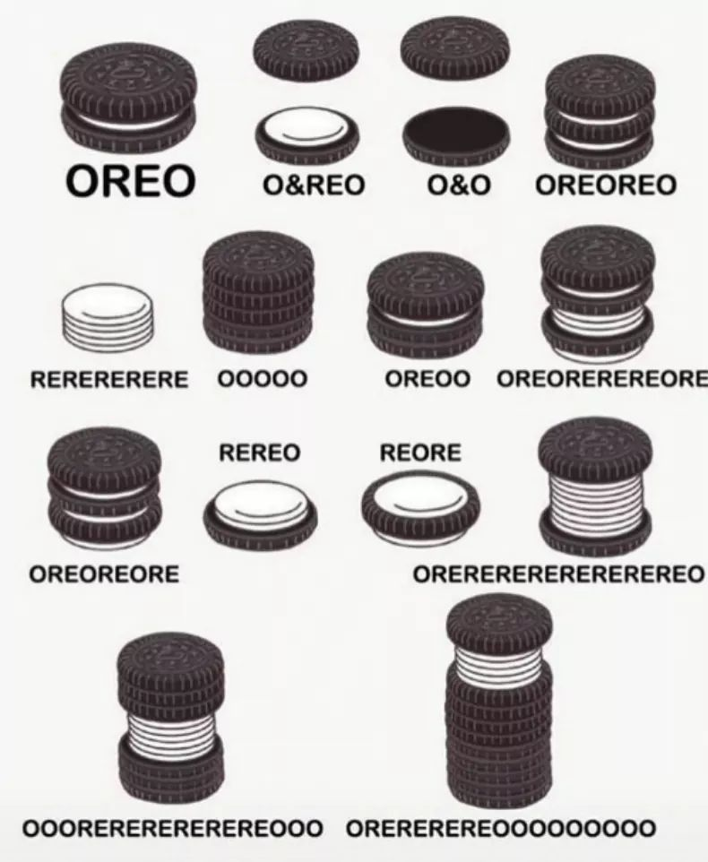
Grammatical Relations
Why do we need Syntax?
Constituency and Constituency Testing
Syntactic Hierarchy
Syntax Trees
How a language marks who did what to whom
Sometimes, you can guess
Many languages use inflectional morphology
But often, this is accomplished with word order!
“Matt ate the veggie burger.”
“Bubba chased Sally”
“Sally chased Bubba”
“Andres waved to Kati”
“Matt insulted Michael Bay”
“Matt ate the veggie burger”
“The veggie burger was eaten by Matt”
“It was the Veggie burgers that Matt was eating”
“And what did Matt consume on that dark, dark night? A VEGGIE BURGER!”
*Ate Matt the Veggie Burger
*Bubba Sally Chased
*Matt Burger Veggie Ate
“Matt ate the veggie burger”
“Matt ate it”
“Matt ate what?”
“What did Matt eat?”
*“What did Matt eat it?”
“Matt likes ambiguity more than most people”
“Matt likes ambiguity more than most people do”
“Matt likes ambiguity more than he likes most people”
“What determines the order and arrangement of words in sentences?”
“What orderings and arrangements are grammatical in a language?”
“How do we identify the meaning of words given their ordering?”
“How does the ordering within a sentence change in contexts?”
Very popular
Very broad
Very, very deep
A group of words which ‘go together’ in the structure of the sentence
Constituents are always a continuous string of words
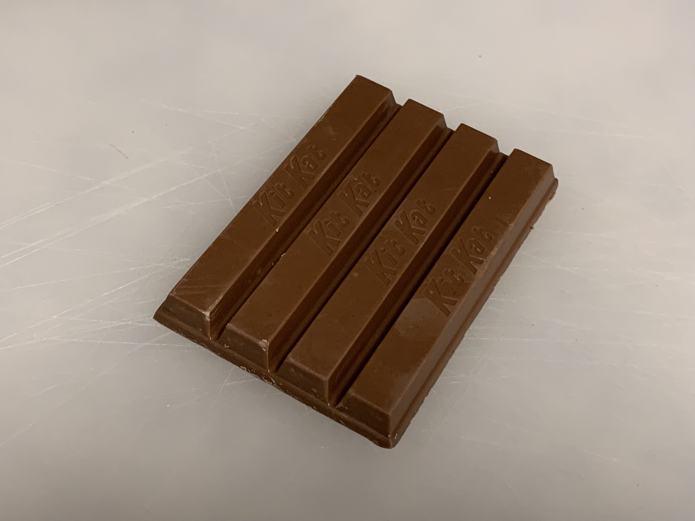
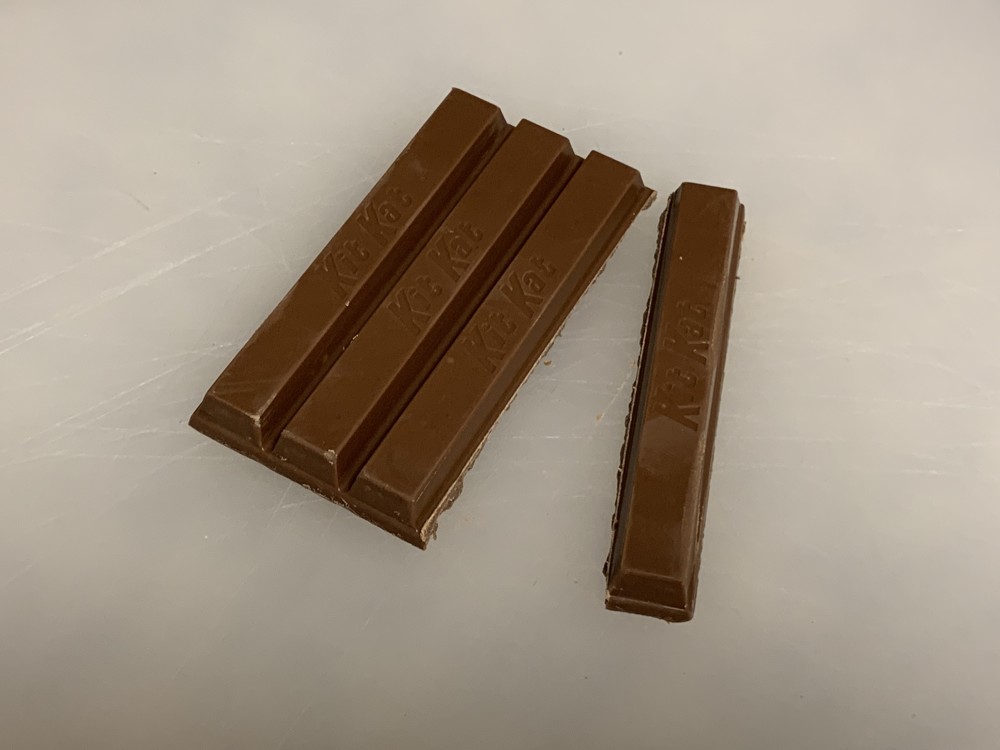
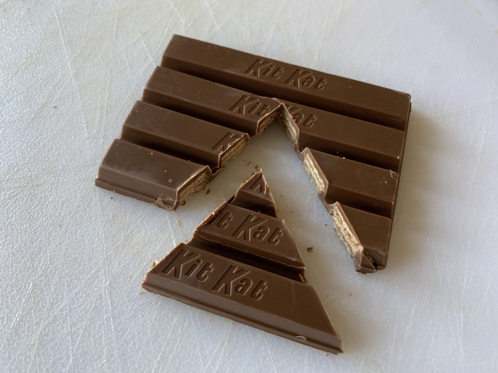
A. [burgers through the]
B. [tracked the wild]
C. [the wild veggie]
D. [wild veggie burgers]
E. [Matt tracked the]
A. [Matt]
B. [tracked the wild veggie burgers through the forest]
C. [the wild veggie burgers]
D. [through the forest]
E. [veggie burgers through the forest]
Using grammatical tests and manipulations to determine whether something is a valid constituent
Substitution
Standalone answers
Movement
Can you replace that element of the sentence with a placeholder?
Any time you can replace a chunk of sentence with something else, it’s a constituent
Wh-words (who, what, where, when, how, why)
Pronouns (he, it, her, them, they, that)
Adverbs of Place and Time (then, there)
“Do so”
He eyed it
The indignant kitten did so.
The indignant kitten eyed what with digust when?
The kitten eyed my veggie burger how yesterday at dinner?
The obligate carnivore eyed my dinner with disgust then
There are other chunks we can’t isolate like this
She saw it then.
She saw the Great Horned Owl that Matt had mentioned then shortly before that.
(… and many more)
“Who bought the gift card?”
“What did he buy?”
“Where was the gift card to?”
“When did he buy it?”
“What did Robert do?”
“How did he buy it?”
If you can move a string of words together, they’re a constituent
The resulting sentence needs to be grammatical
Try Trolls Nice!
His watch collection is what Eugene sold to the Pine Thugs.
To the Pine Thugs, Eugene’s watch collection was sold.
Sold his watch collection to the Pine Thugs, Eugene did.
Pine thugs are who Eugene sold his watch collection to.
[Michael and Karla]
[founded an innovative new dermatology company]
[an innovative new dermatology company]
[an innovative new]
[last month]
[Michael and Karla]
[founded an innovative new dermatology company]
[an innovative new dermatology company]
[last month]
[every cat show in Indiana]
[Lil’ Bub]
[Bub won every]
[every cat show]
[cat show]
[every cat show in Indiana]
[Lil’ Bub]
[every cat show]
[cat show]
[The angry squirrel] - ‘Noun Phrase’ (NP), headed by a noun
[stole the mixed nuts from Walmart] - ‘Verb Phrase’ (VP), headed by a verb
[from Walmart] - ‘Prepositional Phrase’ (PP), headed by a preposition.
The angry squirrel stole the mixed nuts from Walmart - The Sentence (S)
We seem to ‘understand’ it as language speakers
Syntactic rules make constant reference to constituents
We’re pretty sure that whatever syntax is in the mind, constituency is a part of it
“OK, OK. We get it. Constituency is a thing.”
Words combine into phrases/constituents
Phrases combine to form bigger phrases.
Phrases combine to form sentences.
Phrase structure rules show how words/phrases combine to form larger phrases/sentences.
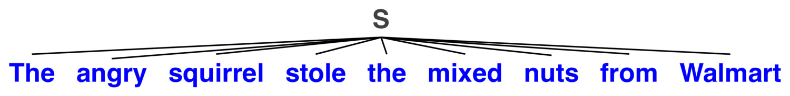
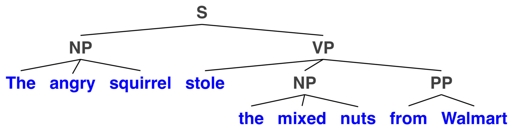

A representation of the hierarchical structure of sentences, capturing constituency.
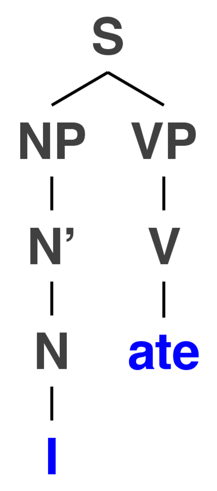
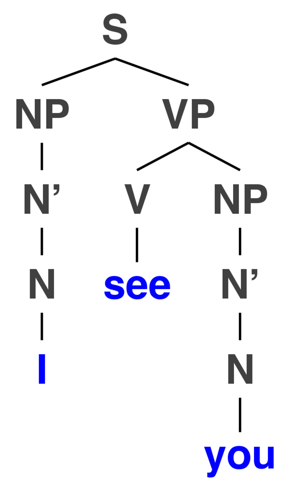
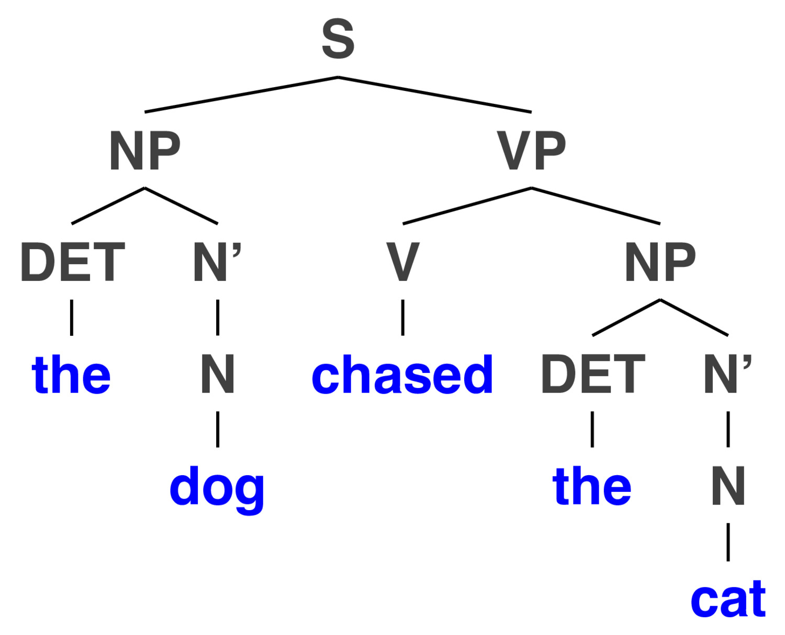

| ### Trees express syntactic structure independent of specific words |
| 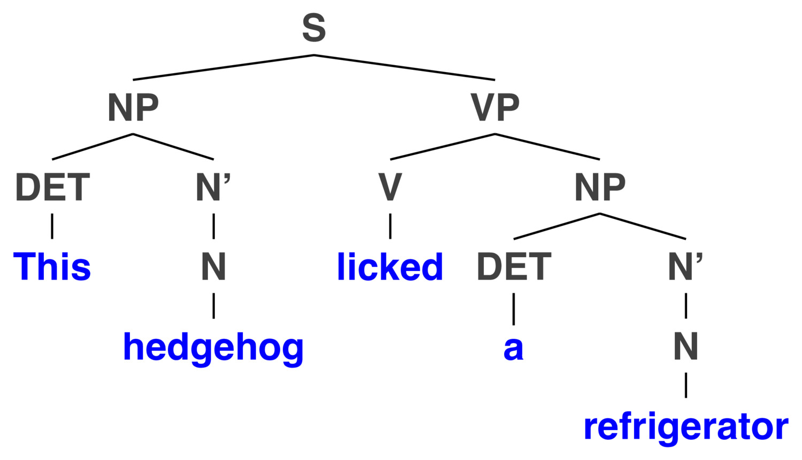 |
“We need more kittens who are cuddly”
“We need to exchange our kittens with ones who won’t bite you”
We need more [cuddly kittens]
We need [more cuddly] kittens
The meaning changes based on how you break the sentence up


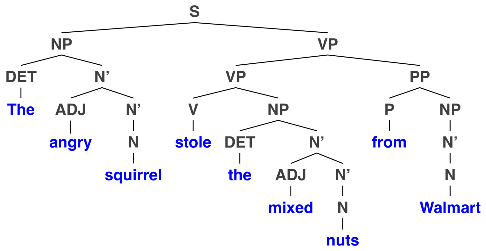
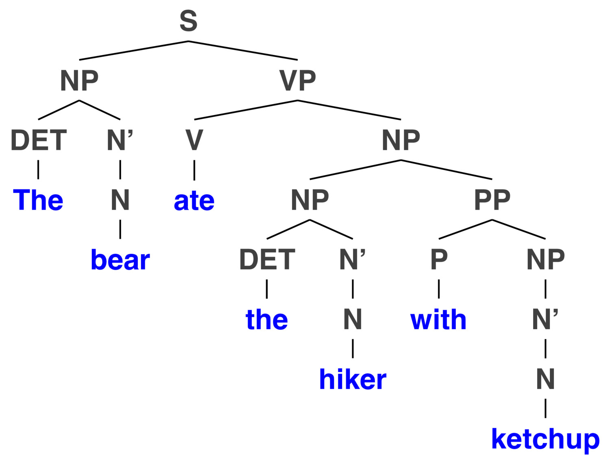
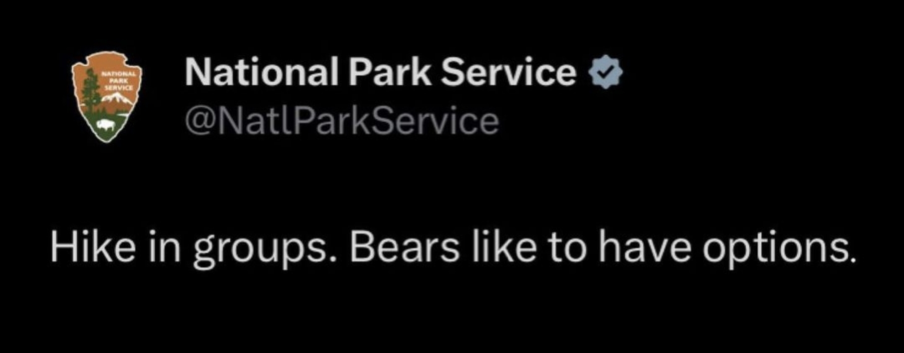

If you just google “Syntax Tree Drawing”, you’ll find many theories intermixed
The best approach is a subject of huge theoretical debate
You will not find much consistency on the internet
Use the materials we’re providing you with, please!
We know that languages can use word order to code grammatical relations
We know that there’s more to it than ordering
We know that constituents of sentences are a thing
… and that they’re derived from hierarchy in sentences
We can read tree diagrams to understand the nature of that hierarchy
We’ll learn how to create syntax trees!
… and we’ll talk about the rules that govern that process